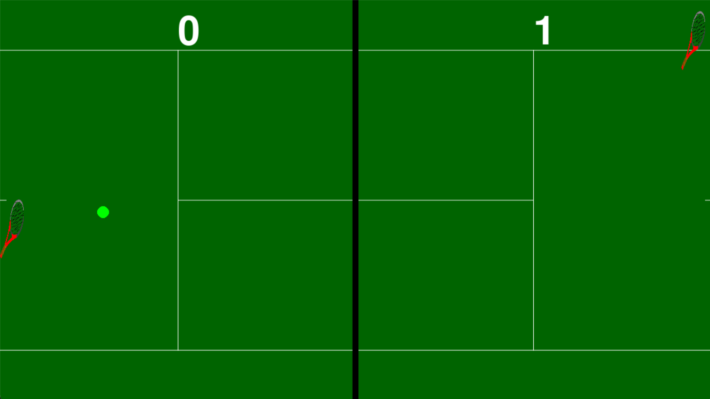
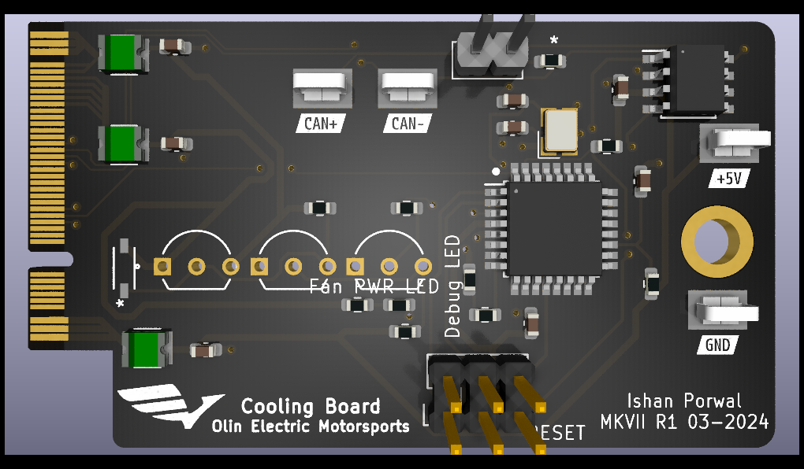

Created the personal portfolio you're currently on using HTML, CSS, and JS.

Tennis Pong
This project is modeled after the classic arcade game, except with
visualizations representing a tennis match instead.

Cooling Control Module
Developed PCB control system for cooling systems on MKVII, Olin's seventh
FSAE electric race car, including radiator fan and water pump control
functionalities.
MIC Engineering Wikipedia Analysis
This project's goal was to find out how prevalent keywords
related to the military-industrial complex are in Wikipedia
pages related to different engineering disciplines.
Warebot
Led a team in developing WareBot, a small-scale, automated forklift system aimed to improve
warehouse efficiency and safety, incorporating programmable movement to mitigate occupational injuries.
3D Printed Bridge
Designed and engineered a K-Truss bridge for the NJIT 3D Printed Bridge Competition,
achieving first place in multiple categories, while prioritizing load capacity optimization.